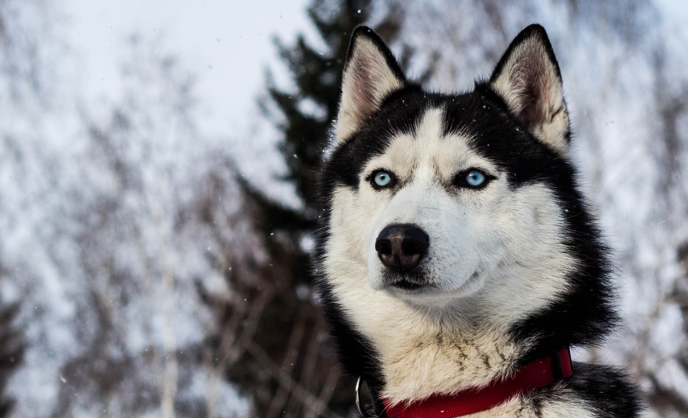
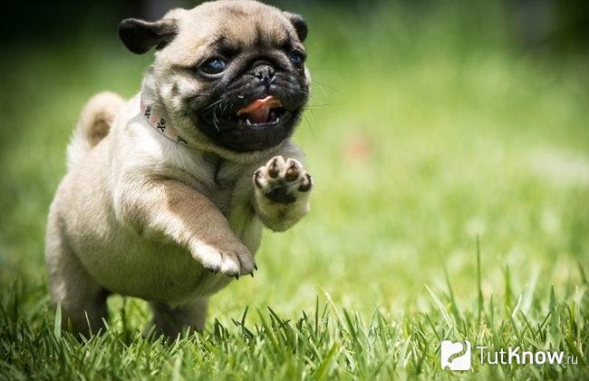
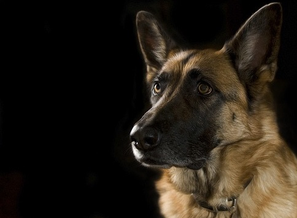

ПОРОДЫ |
УХОД |
КОРМЛЕНИЕ |
ДРЕССИРОВКА |
ЗАБОЛЕВАНИЯ |
О НАС |
Эти ездовые собаки, в незапамятные времена выведенные чукчами северо-восточной части Сибири, отличаются от представителей любых других пород не только выносливостью и способностью к высоким нагрузкам, но и необычной внешностью. |
 |
|  | Маленькие представители древнейшей китайской декоративной породы, которые в разные эпохи по исторически сложившейся традиции сопровождали монархов и прочую знать, имеют удивительную внешность. |
Люди издавна относятся недоверчиво к волкам, с опаской поглядывая на хищников сквозь прутья решетки во время посещений зоопарка. Да и в сказках серый разбойник почти всегда предстает в качестве отрицательного героя, что тоже не добавляет ему популярности. Но есть у волка, как минимум, одна заслуга перед людьми, которая с лихвой оправдывает все его провинности: он подарил человечеству немецкую овчарку. |
 |